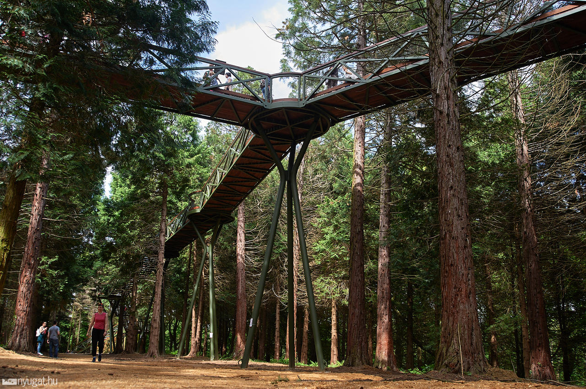

A Kám község határában fekvő Jeli Arborétumot nem csak a rododendronok virágzása idején érdemes felkeresni, bár tagadhatatlan, hogy akkor a legvarázslatosabb. Az arborétum különleges mikroklímája lehetőséget teremtett olyan növényritkaságok és növénytársulások egymás melletti telepítésére, melyek egyébként egymástól nagy távolságra fordulnak csak elő. 2019 óta lombkorona ösvényen is sétálhatunk a magasban.
